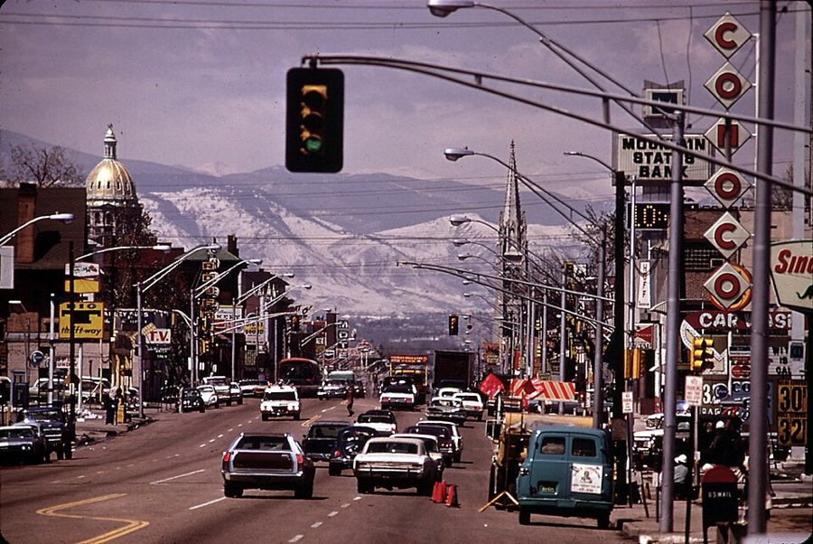
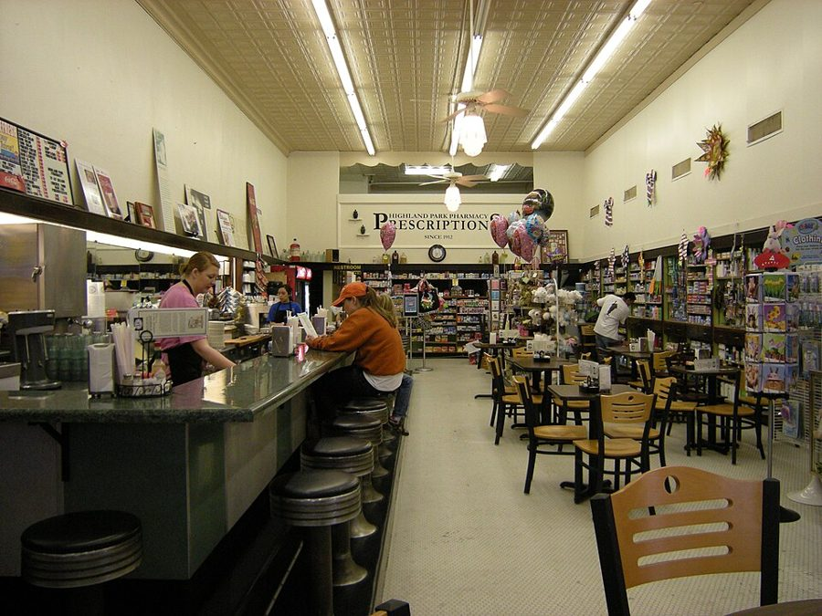
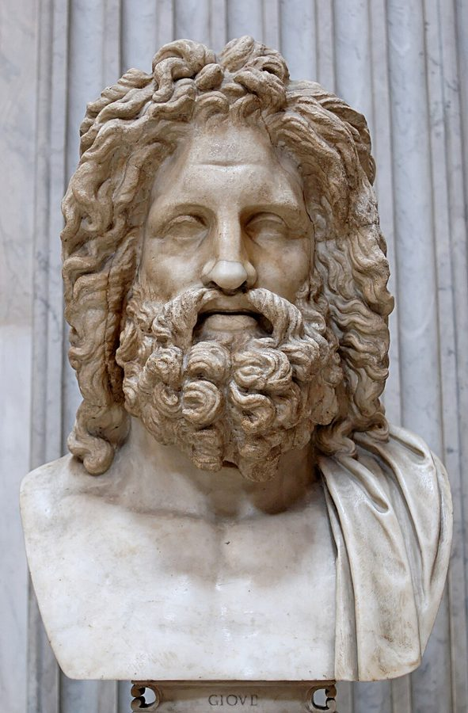
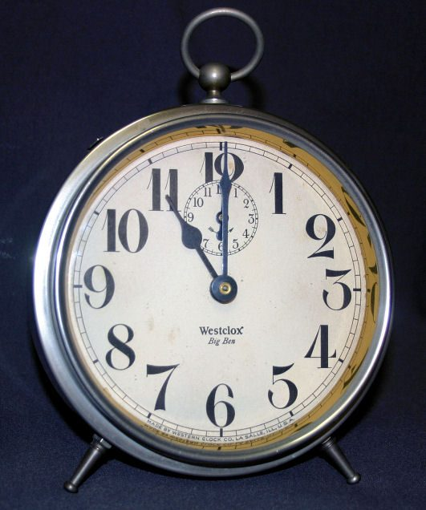
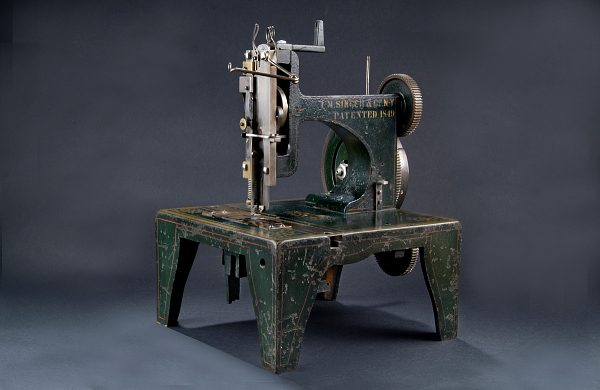

这一章在做什么
一页流水账，跨度大：从五月写到入冬，地点在丹佛。前半是 Dan 一个人埋头干活，叙述里夹着两次街头偶遇、一段城市速写、一次看牙；
原书空行之后回到对话，Sutton 夫妇上门，谈的是机器和生意。难处有两块：场景 1 和场景 5–7 的专利、公司行话，下面先用中文讲一遍；场景 3 里一串只提一句的未来物件，扫过去就行。
抓一条线：他在赶时间。赶的是哪一天，为什么一天都不能拖。

1972 年 4 月的丹佛，Colfax Avenue 向西看：左边的金顶是州议会大厦，尽头是落基山。真实的丹佛，年份和这一页只差两年。
Bruce McAllister，美国国家档案馆，公有领域，维基共享资源 人物
都是虚构的人。老人物只写到上一页结束时你已经知道的。
Dan Davis 叙述者「我」 从 2001 被送回 1970 年 5 月 3 日，落在博尔德附近山里。带来的东西只有一身怪衣服和十公斤金丝。对外的说法是头晕、失忆。
John Sutton 律师 在山里撞见 Dan 的人。听 Dan 说自己来自未来，不信，但收他做了客户，答应向俱乐部替他担保，还教他金子该怎么说。
Jenny Sutton John 的妻子 话少，心软，上一页一直在替 Dan 说情。
Mort新 Dan 在加州认识的人 场景 2 里在街上碰到。Dan 心里对他的评价很不客气。
Dr. Twitchell 物理学家 上一章你见到的是三十年后的他：退休、酗酒、一肚子怨气，被 Dan 激得按了按钮。场景 2 里说的是 1970 年的他。
牙医新 没有名字 场景 3 里的丹佛牙医。
Miles Gentry 只提到，没出场 Dan 的合伙人。按日历，这时候他和「原来的」Dan 还在 Mojave 一起经营 Hired Girl，翻脸是十一月的事。
Belle Darkin 只提到，没出场 Hired Girl 的秘书兼会计，自称二十三岁。按日历，这时候她还是「原来的」Dan 的未婚妻。
场景地图
这一页是第 10 章的第 83–209 段，本站按场景分成 8 段。粗体是每个场景开头的几个词，照着它在书里找位置；读完一个场景回来打个勾。
THE SUTTONS WERE staying over …约 650 词 安顿下来，开工。日期跳得快；留意金子的下落，和他对「样机」的要求。 I did not have time …约 800 词 两次偶遇，两张熟脸。留意 Dan 对两个人的态度为什么正相反。 But little things can cause …约 700 词 独白：日常的小麻烦，一段丹佛速写，一次看牙。设定名词多，别查。 There is no time like …约 350 词 顺手办的另一件事。法律和骗术的词集中在这里，句子像公文。 I RAN BEHIND schedule on …约 550 词 九月底的一个周末，阁楼里来了客人。留意两位客人各对什么有反应。 “I guess not. What are …约 650 词 还在阁楼，话题转到生意。留意 Dan 这一次对「信任」是怎么想的。 Jenny typed descriptions for us; …约 500 词 分工，然后是一场争执。留意 Dan 哪里给了理由、哪里不给，谁让僵局松动。 I stayed until the evening …约 500 词 深夜，两个男人把话说开。留意 John 到底信了没有。
背景：作者默认你知道的事
真实世界里的东西，按在书里出现的顺序排。drugstore 在第 2 章讲过，洛杉矶的 smog 在第 1 章讲过，这里只补新的。
场景 1 loft，和墙上的 120、240loft 是旧厂房、旧仓库楼上的大通间，没有隔断，租金低，画家和小作坊爱租。美国的民用电是 120 伏；进户线其实是两根相位相反的火线加一根中线，
火线对中线 120 伏，两根火线之间 240 伏，电炉、机床用后者。Dan 列的清单是工程师的眼光：两种电压、煤气、自来水，齐了。
场景 2 drugstore 的 lunch counter
药房里的餐台：一条长台、一排圆凳。达拉斯 Highland Park Pharmacy，2009 年摄。
Joe Mabel，CC BY-SA 3.0，维基共享资源（与本书无关） 美国的药房里有一条卖三明治、咖啡的长台，客人并排坐在固定的圆凳上，面前常是一面镜子。陌生人肩并肩吃饭，从镜子里看见邻座的脸，是这种地方才有的事。
Champa Street 是丹佛市中心一条真实的街。
场景 2 丹佛的大学和博尔德的大学科罗拉多有两所容易混的学校。University of Colorado 是州立大学，在博尔德，第 8、9 章的实验室属于它。University of Denver 是丹佛城里的一所私立大学，1864 年建校。
两地相距四十公里。场景 2 里 Dan 说了一个 the university，心里想的是哪一所，对方听成哪一所，要分清。
场景 2 法语的「文学时态」和拉丁语的「历史时态」法语有一套只在书面叙事里用的时态（passé simple 一类），口语里不说，学法语的人要另背一套变位。拉丁语语法把过去的几种时态归为 historical tenses，从句的时态要跟着主句变。
对上过中学的美国人，这两样就是「最烦人的动词变位」的代名词。conjugation 即动词变位。
场景 2 Zeus 的脸
「奥特里科利的宙斯」，罗马时代仿希腊原作的大理石像，藏梵蒂冈博物馆。
公有领域，维基共享资源 希腊神话的众神之王。古典雕像里的宙斯有一张固定的脸：盛年、浓须、高眉骨，威严，带一点傲慢。说谁「长着一张宙斯的脸」，是说他相貌堂堂，自己也知道。
场景 3 丹佛的地名
落基山
the high country
Colfax Avenue
Denver
Boulder
西北约 40 公里
Aurora
东，紧挨着
Henderson
北约 25 公里
Littleton
南约 15 公里
Air Academy（再往南约 80 公里）
北
本站示意图，不按比例。蓝点是书里说的「城市已经漫到的地方」。
Colfax Avenue 是横贯丹佛的东西向主街，上一章 Dan 在三十年后的丹佛找不到它。Aurora、Henderson、Littleton 是城东、城北、城南的小镇。
the Air Academy 指美国空军学院，1954 年设立，校址在南边科罗拉多斯普林斯附近，写这本书时还在盖。书里说市区离它还隔着旷野，是在量这座城涨了多大。
场景 3 Great jumping Jehosaphat!Jehoshaphat 是《圣经·旧约》里的一位犹大国王。美国人拿这个名字当感叹词，因为它开头像 Jesus、Jehovah，又不算亵渎，这类词叫 minced oath（剁碎了的咒骂）。
Jumping Jehoshaphat 押头韵，是老派人的口头禅。第 6 章废车场的工头喊的是 Great jumping Jupiter，同一个模子。
场景 4 badger game美国的老骗局，中文叫仙人跳：女人把有家室的男人引到旅馆房间，同伙扮成「丈夫」闯进来，当场勒索。女方在里面的角色叫 lure ，诱饵。
badger 是獾，名字来自旧时放狗斗獾的把戏。带引号的 racket 是同一类词：成套的骗钱门道。
场景 5 闹钟和 vulcanize
Westclox 的 Big Ben 发条闹钟，美国 20 世纪最常见的款式之一。
JVGJ，CC BY-SA 3.0，维基共享资源 上发条的机械闹钟，到点用小锤猛敲铃壳，响到你起来按掉为止。vulcanize 是硫化：把生橡胶加硫加热，变成有弹性的熟橡胶，轮胎就是这么做的。
一个工程师说自己把鸡蛋「硫化」了，你能想出那盘蛋的口感。
书里的世界
这一页的 1970 是书里的 1970：打过核战争，首都迁到了丹佛。Dan 拿它和他刚离开的 2001 一件一件比，所以两头的设定都在冒出来。只列新的。
5 月
6 月
7 月
8 月
9 月
10 月
11 月
12 月
原来的 Dan（第 1–4 章讲过）
在 Mojave 的 Hired Girl 上班，和 Belle 订了婚
11 月 18 日 股东会，出局
12 月 3 日 酒吧
12 月 4 日 入睡
从 2001 回来的 Dan（这一页）
5 月 3 日 落在博尔德山里
？
本站示意图，只画到上一页结束时你已经知道的事。同一个 1970 年里有两个 Dan，一个在加州，一个在科罗拉多。
书里的说法 在书里是什么 真实世界里 licensed gold buyers 持证的黄金收购商，按铸币厂的金价收金子，扣一笔固定手续费，给一张凭单。 真实的 1970 年私人不能持有金条，矿主和首饰行业卖金、用金要有财政部的许可。书里的制度是照着它写的。 Jaguar Imperator John 的车。Dan 一看就知道车主不是穷律师。 Jaguar 是真实的英国车厂，以跑车和豪华轿车出名；没有出过叫 Imperator 的车型。 Denver, the national seat of government 第 9 章提过战后迁都丹佛。这一页是 1970 年的样子：正在大兴土木，联邦机构往西边山里挖洞。 首都一直是华盛顿。1960 年代美军确实在科罗拉多的山体里挖了指挥所（Cheyenne Mountain），在丹佛以南。 the Federal enclave 联邦政府在丹佛圈占的地盘，还在往外扩。 enclave 本义是「飞地」。华盛顿所在的哥伦比亚特区就是一块不属于任何州的联邦地盘。 New Plan 第 6 章洛杉矶就有的说法：按新规划改造过的城区。这一页说三十年后的丹佛成了 New Plan 的「迷宫」，连街道都没有了。 — dental plastician、anti-caries pills 2001 的牙科：吃药防蛀；牙医叫 plastician，能让牙长回来（原文 regeneration）。怎么做到的，Dan 自己也不知道。 caries 是龋齿。真实世界靠氟防蛀，美国城市 1945 年起往自来水里加氟。牙齿再生至今做不到。 2001 没有的烦恼 场景 3 一口气列的：刮胡子、感冒、淋湿的衣服、会凉的菜、要送洗的衬衫、起雾的镜子、闹钟。 免烫衬衫和防雾镜后来有了。感冒没治住，闹钟搬进了手机。 Mark II Hired Girl Hired Girl 的第二代。1970 年的普通人家已经在用。 — Denver International Port 丹佛的航空港，有定点往返的 shuttle 航班。 1970 年丹佛的机场叫 Stapleton。名字几乎一样的 Denver International Airport 1995 年才启用。
这一章的行话，先用中文过一遍
场景 1 和场景 5–8 的叙述和对话里，专利和开公司的行话成串出现。先把这几个概念摆出来。
一份专利申请里有什么
drawings 图纸
description 说明书
claims 权利要求
机器长什么样
怎么造、怎么用，要如实
「下面这些都归我」
往宽里写
专利局
审查员往回砍
working model 样机
不用交
本站示意图。图纸和说明书要互相对得上，所以三样里最后才写得完的是文字。
申请专利交的是纸：图纸、说明书、权利要求。说明书讲这东西怎么做；claims 一条一条划出「哪些归我独占」，是专利的边界。类比：说明书是实现和文档，claims 是你对外声明拥有的接口。
第 8 章 Dan 说过行规：claims 先往大里写，等审查员往回砍，这是 patent attorney（专利律师）的饭碗。

Isaac Singer 缝纫机的专利模型，1850 年代。那时候申请专利要连模型一起交。
Smithsonian Institution，公有领域，维基共享资源 19 世纪的美国专利局要求交一个能演示的小模型，1880 年起不再要求，所以书里说「不需要」。能拿到专利和能卖钱是两回事：专利只管「新」，不管有没有人买。
从专利到公司
发明人手里只有专利，要变成产品还缺三样：一个法人（corporation ，股份公司，按 shares 分所有权）、钱（financing ，融资）、能批量造的设计（production engineering ，生产工程：尽量用目录上买得到的标准件，少用定做件）。
第 2 章 Dan 吃的亏就出在第一样上：公司是谁的，看股份在谁手里。
stock mortgage
借钱时拿自己的股票作抵押，还不上钱，股票归债主。to secure a loan 是「为一笔借款提供担保」，这个 secure 不是「安全」。
英文 中文 一句话 claims 权利要求 专利文件里划定保护范围的条文。不是「声称」。 description 说明书 把发明讲清楚的文字部分，要和图纸对应。 working model 能动的样机 working 是「能运转的」。 patent attorney 专利律师 专门写申请、和专利局打交道的律师。 retain (a lawyer) 聘请（律师） 付一笔聘金把律师定下来。不是「保留」。 production engineering 生产工程 把样机改成工厂能便宜、稳定地批量造的东西。 standard components 标准件 产品目录上现成买得到的零件。 farm out 外包 把活交给外面的厂做。 machine tools 机床 车床、铣床、钻床一类。不是泛指「机器和工具」。 machine shop 机加工车间 有机床的地方。 trademark 商标 注册了的图形或名称，别人不能用。 home office 总部 公司的总办事处。不是「在家办公」。 gray market 灰市 东西本身合法，但走的不是正规渠道，价钱高。 bullion 金条、金块 按重量和成色计价的金银，区别于金币和首饰。 voucher 凭单 证明一笔钱货往来的单据。 parole 假释 有条件地不关或提前放出来，期间要定期报到。 respondent （离婚案的）被告 被对方起诉离婚的一方。
词与短语
词条按在书里出现的顺序排，按场景分组。斜体小字是它所在的那句话里的几个词，方便你在书里找到。
场景 1 THE SUTTONS WERE staying over …
stay over
… SUTTONS WERE staying over until Monday …
留下过夜
over 是「过（夜）」。sleep over、overnight 同理。
unnosy
… friendly but remarkably unnosy about my …
不爱打听的
nosy 是爱管闲事（鼻子伸得长）。un- 是 Dan 自己加的。
skin club
… manners in a skin club, but …
天体俱乐部
Dan 的叫法，上一页是 bare-skin camp，下面还有 bare-bottom club。三个都不是正式名称。
cot
… slept on a cot in the …
行军床，折叠床
美式用法。英式英语里 cot 是婴儿床。
darn chilly
… dormitory. It was darn chilly. The …
冷得要命
darn 是 damn 的委婉说法，当副词。下面的 darn little else：别的几乎什么都没有。
shyster
… was no cheap shyster. But I …
讼棍，不择手段的小律师
美国俚语，贬义。be no + 名词：绝不是那种人。
get busy
… cash again, I got busy. That …
动手干起来
不是「变忙」，是「开工」。
120, 240
… it already had 120, 240, gas, …
120 伏和 240 伏的电
见上面「背景」。工程师说话省掉了单位。
watch every dime
… had to watch every dime. …
一分钱都得算着花
dime 是一角硬币。
routine
… the old compass-and-T-square routine and I …
老一套（做法）
compass 是圆规，不是指南针；T-square 是丁字尺。整个词组：圆规加丁字尺的老办法。
so linked as to
… automaton, so linked as to be …
连杆装得能够……
linkage 是机械的连杆机构，第 2 章讲 Flexible Frank 时用过。
properly instructed
… tubes were properly instructed. I knew …
（记忆管）教对了
instruct 在这里就是今天说的 program。1956 年还没有通行的说法，后文 Dan 也用了 program。
claims
… make the claims as broad as …
（专利的）权利要求
见行话一节。
sell themselves
… to have to sell themselves, show …
自己把自己推销出去
东西好到不用人吹。主语是 models。
dip into
… I grudgingly dipped into my precious …
动用（存款）
像把手伸进罐子里舀。grudgingly：很不情愿地。
speckle-lacquer
… manufacture pretty speckle-lacquer cover plates for …
斑点漆
仪器外壳上那种带细麻点的烤漆。cover plates 是外罩板；下一句的 chrome-plated 是镀铬。
farm out
… only jobs I farmed out and …
外包出去
和农场无关。
get through
… commercial when I got through. But …
做完
when I got through = 等我完工的时候。commercial 是「有商业价值的」。
场景 2 I did not have time …
get around
… time to get around much, which …
四处走动
后半句 which was just as well：这样倒也好。
bump into
… Imagine bumping into you here. …
偶然碰见
同一段前面的 ran into 是同义。Imagine …!：真想不到。
buddy-buddy budding tycoons
… still buddy-buddy budding tycoons together?” …
哥俩好的未来大亨
buddy-buddy 是称兄道弟；budding 是含苞待放的、崭露头角的；tycoon 是大亨。三个词押头韵，油嘴滑舌的腔调。
on the side
… up here on the side, on …
顺带，私下另外
正事之外偷偷干的。a job on the side 是兼职。
Get me?
… and private business. Get me? Nothing …
懂我意思吧？
get = 明白。对方回的 I catch 是同一个意思。
look knowing
… He looked knowing. “Woman trouble?” …
露出一副「我懂」的神情
knowing 作形容词：心照不宣的。
dig me in the ribs
… He dug me in the ribs …
用胳膊肘捅了捅我的肋骨
男人之间说荤话时的动作。dug 是 dig 的过去式。
cover for
… Okay, I’ll cover for you and …
替你打掩护
cover you with a spade
… like to cover you with a …
拿铁锹把你埋了
抓住对方的 cover 换了个意思：盖上土。spade 是铁锹。第 1 章 aim 的那一手。
frallup
… myself, you fourth-rate frallup. Mort was …
（2001 的骂人话）
作者造的未来俚语，第 7 章 Belle 骂人时用过。Dan 在心里骂，用的是三十年后的词。
the line he handled
… which, the line he handled was …
他经销的那路货
line 是产品系列，handle 是经销。shoddy：粗制滥造。
up to its specs
… was, never up to its specs. …
达到标称的规格
specs = specifications。up to = 够得上。
fairy tales
… treated him to fairy tales about …
瞎编的故事
treat someone to：请某人享用。请他喝了酒，又「请」他听了一通瞎话。
shake him
… exploits. Then I shook him. …
把他甩掉
不是「摇晃他」，也不是握手。shake off 的省略。
catch hold of myself
… Then I caught hold of myself …
稳住了神
conjugations
… reflexive situations—conjugations that would make …
动词变位
见上面「背景」。reflexive 是「反身的、绕回自己身上的」，场景 4 末尾还会出现。
general-issue face
… have a general-issue face like mine; …
「统一配发」的大众脸
军队用语：统一配发的制式装备。美国兵的外号 GI 常被解作 Government Issue，同一个 issue。上一章他说自己是「十二种标准脸」之一。
look at home on
… have looked at home on Zeus. …
安在……身上也毫不违和
at home = 自在、相称。
in ruins
… that face only in ruins, but …
已成废墟的样子
上一章把老年的 Twitchell 比作塌了顶的神庙，这里接着那个比方。
make it up to him
… I could make it up to …
补偿他
make it up to someone：弥补对某人的亏欠。和 make up（编造、化妆、和好）都不一样。
slip
… I had almost slipped, having forgotten …
说漏嘴，出错
名词也是 slip。几段后的 make many slips，以及最后一个场景的 slips of memory，都是它。
rise to it
… he did not rise to it. …
不上钩，不接这个茬
rise to the bait：鱼浮上来咬饵。Dan 抛出去的是一句恭维。
a gnawing need for adulation
… acquired a gnawing need for adulation; …
对吹捧的那种抓心挠肝的渴求
gnaw 是啃。adulation 是过分的奉承。
hang onto
… I tried to hang onto him …
缠住不放
drop into
… meeting you. Drop into my lab …
顺便来坐坐
客套话。drop in / drop by 同义。
second time around
… in 1970 (second time around) because …
第二回过（这一年）
around 是「轮到」。括号里一句轻描淡写，说的是他在把同一年再活一遍。
brushoff
… and the quick brushoff—take no chances. …
爱答不理地打发掉
像掸灰一样把人掸开。the cold stare：冷眼。
场景 3 But little things can cause …
precious esthetes
… that those precious esthetes who sneer …
那帮矫情的唯美派
precious 这里是讽刺：故作高雅的。esthete（也拼 aesthete）是把美看得高于一切的人。
prattle
… progress and prattle about the superior …
喋喋不休地空谈
第 2 章 Dan 说妇女杂志的「省力厨房」是 prattle，同一个腔调。
get the hang of
… until I got the hang of …
摸到门道，重新上手
a dog gets used to his fleas
… But a dog gets used to …
狗身上的跳蚤，久了也就惯了
俗话的意思：再烦的事也能习惯。
quaint
… was a very quaint place with …
古色古香的，老派得可爱
一个 1970 年的人说 1970 年的城市 quaint，好笑就在这里。
slick
… nothing like the slick New Plan …
光溜溜的，过分齐整的
本义是滑。说人是圆滑，说东西是漂亮得没有人味。
seat of government
… being the national seat of government …
政府所在地，首都
seat 是「所在地」。county seat 是县城。
high-heeled boots
… still yearned for high-heeled boots and …
（牛仔的）高跟靴
牛仔靴有跟，为了卡住马镫。不是女鞋。western twang 是西部人带鼻音的口音。
jerry-built
… city was being jerry-built in all …
偷工减料地赶造
不要和 jury-rigged（临时凑合装起来，第 5 章）弄混。
contact men
… lobbyists and contact men and clerk-typists …
跑关系的掮客
lobbyist 是游说议员的说客。这一串名词是首都特产。
flunkies
… and clerk-typists and flunkies; buildings were …
跟班，跑腿的
第 6 章 Dan 管招聘处的小职员叫 hiring flunky。
throw up
… buildings were being thrown up so …
匆匆盖起来
不是「呕吐」。后半句的玩笑：盖得太快，说不定把一头牛砌在了墙里。
work over
… had my teeth worked over completely …
彻底整修一遍
have something worked over：请人把它从头弄一遍。
So help me
… to a dentist. So help me, I …
我发誓；说真的
法庭誓词 so help me God 的缩略。
Kah hoo hank?
… “Kah hoo hank?” …
（张着嘴说的一句含糊话）
牙医的手还在他嘴里。听不清是有意写的，不用猜是哪几个词。
plug it up
… that bicuspid, plug it up with …
把洞堵上
bicuspid 是前磨牙（两个尖的牙）。Dan 说补牙像说修管子。
on a dead run
… But I’m on a dead run.” …
赶得要命，一刻不能停
dead 是「十足的」：dead tired、dead center。
cover up
… but covering up had become a …
遮掩
这一页 cover 的第三个用法（打掩护、埋、遮掩）。pics = pictures，指 X 光片。
场景 4 There is no time like …
with my left hand
… else done with my left hand. …
用左手（顺带着）办了
右手忙正事，左手办副业。不是真的用左手。
dig up
… national branches to dig up Belle’s …
挖出，查出
dig up dirt on someone：挖某人的黑料。
kiss my money goodbye
… days I kissed my money goodbye. …
认定这钱打了水漂
kiss something goodbye：跟它吻别，当它没了。
a busy girl
… Belle had been a busy girl. …
一直没闲着
反话。下面的清单就是她「忙」的内容。
did not count
… One of them did not count because …
不算数
count 作不及物动词：算数、有效。
racket
… been the “war-widow” racket worked with …
骗钱的门道
不是球拍。work a racket：玩这套把戏。
respondent
… been divorced once (respondent) and one …
（离婚案的）被告
见行话表。括号里一个词，信息量不小：是对方告的她。
do time
… granted parole without doing time. This …
坐牢
time 指刑期。
jump parole
… as she had jumped parole, changed …
假释期间跑了
jump bail 是弃保潜逃，同一个 jump。
lure in a badger game
… worse than lure in a badger …
仙人跳里当诱饵
见上面「背景」。
dope peddling
… it had been dope peddling? Reflexive …
贩毒
dope 是毒品（俚语），peddle 是沿街兜售。
场景 5 I RAN BEHIND schedule on …
run behind schedule
… I RAN BEHIND schedule on the …
进度落后
was on me
… and October was on me before …
（十月）已经压到眼前
be on / upon someone：某个日子不知不觉到了。
tie into
… they had to tie into drawings, …
和……对应上
说明书里的每个部件都要指到图上的编号。
hold up
… so that it would hold up; I …
站得住，经得起考验
不是「举起」或「抢劫」。hold up in court：在法庭上站得住。
fiddling
… years and a fiddling three weeks; …
那么一丁点的
形容词：微不足道的。第 5 章司库说过 a fiddling four hundred dollars。
toys
… not shown my toys to my …
「玩具」：我那两台机器
工程师的自谦。上一章 Dan 说 Twitchell 想 show off his toy。
pull oneself together
… I pulled myself groggily together and …
强打起精神
groggily：昏昏沉沉地。grog 是水兵喝的掺水朗姆酒。
couldn’t make it
… that I couldn’t make it, I …
去不了
make it 用在约会上：能到。上一页 I’d made it 是「赶上了」。
get on the other phone
… John got on the other phone …
拿起了家里的分机
一条线两部话机，两个人可以同时听同时说。
vulcanize
… burned some toast, vulcanized some eggs, …
把（鸡蛋）煎成了橡胶
见上面「背景」。
gismo
… isn’t a woman’s gismo, unless she …
小玩意儿，小装置
也拼 gizmo。这句话是 1950 年代的偏见，他自己加了个 unless。
keep house
… She kept house with a Mark …
持家，做家务
不是「保住房子」。housekeeping 就是这么来的。
his eyebrows stayed up
… had practiced—his eyebrows stayed up. “Chum, …
他的眉毛挑上去就没下来
吃惊。Chum 是「老兄」，1950 年代的亲热称呼。
throw out of work
… going to throw draftsmen out of …
让……失业
draftsman 是制图员。by the thousand：成千成千地。
second sight
… “Call it second sight...but I …
「天眼」，未卜先知
苏格兰民间说法：能看见将来之事的本事。
场景 6 “I guess not. What are …
hitch
… “That’s the hitch, John. I’m …
卡住的地方，麻烦
本义是绳结、挂钩。Dan 的口头禅，第 2、6、8 章都用过。
jackleg mechanic
… a fair jackleg mechanic when I …
半路出家的土机修工
jackleg：没受过正规训练的。fair 是「还过得去的」。
fool with
… You’ve never fooled with patent law?” …
碰过，摆弄过
不带贬义，只是「沾过手」。
smart as a whip
… Who’s smart as a whip besides? …
脑子快得像鞭梢
固定比喻。besides：而且还要。
pressed for time
… I’m terribly pressed for time.” …
时间紧得很
have work cut out for you
… nine months’ work cut out for …
有一大堆活等着你
have one’s work cut out：任务艰巨。像裁缝把料子都裁好了，只等你一件件缝。
lined up
… lined up to start moving, with …
排好了阵势（还没动）
You won’t be in production：那时候也还没投产。
I’ll say
… “I’ll say you can’t.” …
那可不；说得太对了
I’ll say! 表示强烈同意，不是「我将要说」。这里是顺着对方的 can’t 说：你当然办不到。
there is something to
… that there was something, after all, …
（某种说法）也许有点道理
there is something to it：这话不全是胡说。这里说的是「命」。
a big order
… “That’s a big order, Dan. I …
一个很重的托付
更常见的说法是 a tall order：难办的要求。
rob you blind
… I could rob you blind. You …
把你偷个精光
blind 表程度：偷到你两眼一抹黑。
advice for a fee
… your attorney, advice for a fee.” …
按次收费出主意
和「全权交给我」相对：只当顾问，不碰你的东西。
get your fingers burned
… you get your fingers burned, you …
吃亏上当
第 5 章 Dan 说过同一句，那次烫他手的是 Belle。
sleep with one eye open
… cave, sleeping with one eye open. …
睁着一只眼睡觉
时刻提防。hermit 是隐士。
put in
… will,” Jenny put in gently, “though …
插了一句
a ‘judgment’ job
… It’s a ‘judgment’ job, not a …
要「拿主意」的活
第 2 章讲过：机器的 judgment 只是一圈查找电路。Dan 拿砌砖、开卡车当「简单」的例子，洗碗反而是难的。
to put it gently
… a pig, to put it gently.” …
这还是往轻里说
put 是「表述」。上一页的 Put that way 是同一个 put。
it had missed me
… truth, it had missed me entirely …
我压根没想到
主语是那件事：它从我身边溜过去了。和 I missed it 说的是一回事，方向相反。
take over
… it, for John took over. …
接手
场景 7 Jenny typed descriptions for us; …
retain
… for us; John retained a patent …
聘请（律师）
见行话表。
cut him in on the cake
… cash or cut him in on …
分他一块蛋糕（给股份）
cut someone in：让某人入伙分一份。
leave it up to him
… the whole thing up to him, …
全交给他定
up to someone：由某人决定。
as such
… care; money as such is not …
本身
money as such：钱这东西本身。
home office
… other thing: The home office had …
总部
见行话表。had better be：最好设在。
wash over
… enclave has washed over it and …
（像潮水一样）漫过去
意思是地被联邦征走。
gray-market
… materials are all gray-market. Whereas Los …
灰市的
见行话表。overland：走陆路（没有港口）。
lick
… “They’ll lick the smog before long. …
治住，打败
口语。第 6 章说 2000 年已经 licked the common cold。
kiyoodling off
… while you go kiyoodling off on …
撒欢儿跑掉，到处瞎逛去
美国方言里的俏皮词，词典里难查到，意思从上下文看得出：你去忙你那不肯说的私事。
stationed
… I was stationed out there during …
（军人）驻扎在
John 当过兵。the war 指六周战争。
You couldn’t hire her to
… shame. You couldn’t hire her to …
给钱她都不肯
第 8 章 Dan 说过 You couldn’t hire me to go back to 1970，然后他回来了。
go so far as to say
… “Oh, I wouldn’t go so far as …
话倒也不至于说到那个份上
客气地唱反调。原文 never 是斜体。
场景 8 I stayed until the evening …
scandalous
… for components had been scandalous—but I …
贵得不像话
本义是「丑闻一般的」。
stock mortgage
… him a stock mortgage to secure …
股票抵押
见行话一节。
get around to it
… when you get around to it.” …
什么时候顾得上再说
get around to：终于腾出手来做。场景 2 的 get around 是四处走动。
As you will.
… “As you will.” He let me …
听你的。
will 是实义动词「愿意」。第 3 章 Miles 也这样说过，口气冷得多。
bring it up to the point
… I had brought it up to …
把故事讲到……那一步
mixed up on
… I was mixed up on one …
在……上弄错了
bulldoze
… bulldoze that laboratory site any deeper, …
用推土机推平
引号里他在改时态：实验室十年后才盖，对此刻的他是「将要」。
flat waveform
… when a flat waveform changes back …
拉平了的波形
Dan 对时间位移的工程师式理解：人被变成一段波，到了地方再变回实体。书里没有更多解释。
Subject to
… “It’s accurate. Subject to minor slips …
前提是；除去
合同用语：以……为条件。上一页的 subject to attacks 是「容易犯」，同一个词组的另一个意思。
agreeable
… are the most agreeable lunatic I’ve …
讨人喜欢的
不是「同意的」。lunatic：疯子。
straitjacket
… you a new straitjacket for Christmas.” …
（精神病院的）约束衣
strait 是「紧、窄」，和海峡 strait 同源，不是 straight。
Have it your own way.
… “Have it your own way.” …
随你怎么想。
吵不出结果时的让步话。第 4 章 Miles 对 Belle 说过。John 下一句接的是同一个 have it：我只能这么想。
stark staring mad
… myself am stark staring mad...and that …
彻底疯了
固定搭配，stark 和 staring 都是加强语气。
scalp
… wake her. She’d scalp me if …
剥了我的头皮（饶不了我）
西部说法。说这话的人上一页就写了是秃顶。
I wouldn’t think of it.
… “I wouldn’t think of it.” …
我哪会（不告而别）。
wouldn’t think of doing：绝不会做。it 指不告而别。
shuttle
… the eleven o’clock shuttle for Los …
（两地间的）定点往返航班
本义是织布机的梭子，来回跑。
值得停下来的句子
There is no time like the past to get things done.
— 场景 4 的第一句。本站译：要办事，哪儿也比不上「过去」。
改的是谚语 There is no time like the present （趁现在，别拖）。只换一个词，劝人勤快的老话就成了时间旅行者的大实话。
这一页有好几处这样拿时态开玩笑：场景 2 里他卡在 had 和 would 之间说不下去，最后一个场景里又把 If they had 改成 if they were going to。
…no matter how many times you get your fingers burned, you have to trust people.
— 场景 6。本站译：不管被烫过多少回手，你还是得信人。
全书的一个转折点，写得很轻。第 2 章他信 Miles 和 Belle，输光了；现在同样的局面又来一次，对方还亲口提醒他「我可以把你偷光」。
他的结论不是「这回的人可靠」，而是「不信人的代价更大」：那样只能当山洞里的隐士。后面他把股份怎么分也交给 John 定，理由很工程师：让对方自己定，就没有可以眼红的东西。
“I’m going to buy you a new straitjacket for Christmas.”
— 场景 8，John。本站译：「圣诞节我送你一件新的约束衣。」
John 的结论是 Dan 疯了，可这句话的前后是：借给他三千美元不要抵押，说他是好工程师、好朋友。
他自己把道理讲了：要么 Dan 疯，要么我疯，后一种对 Jenny 太麻烦。一个讲理的人碰上不讲理的事实，选了一个能照常过日子的解释。
检查一下理解
先在心里答，再点开。答错的那题，回书里把对应的场景再读一遍。
1.（场景 1）金子最后是怎么变成钱的？经手的细节 Dan 知道吗？
John 全包了。他没走铸币厂，而是分几周卖给持证的黄金收购商，把凭单和钱交给 Dan，自己一分不收。Dan 再没见过那包金子，也没问，John 也没说。
2.（场景 1）申请专利不需要样机，Dan 为什么还要花大力气把样机做得又好用又好看？
专利只要图纸和文字，但他要的不只是专利。样机得让外行一上手就信服，还得让人看出将来批量造起来省钱，这样才有人肯投钱。所以他连外壳和镀铬都舍得花钱。
3.（场景 2）Mort 说回去给 Miles 打个电话，Dan 为什么慌？他编了什么？
此刻 Mojave 还有一个「原来的」Dan 天天和 Miles 在一起，不能让 Miles 听说丹佛也有一个。他顺着 Mort 的猜测，编了一段和有夫之妇的私情，Mort 这种人一听就乐意替他瞒着。
4.（场景 2）遇见 Twitchell，Dan 先想躲，转念又放心了。凭什么？他差点在哪里说漏？
三十年后的 Twitchell 没有因为认出他而出过任何事，那么今天这一面也出不了事（上一章老人一见他就说 You again，这下有了来历）。差点说漏的是学校：他只记得博尔德那位老教授，忘了这一年 Twitchell 还在丹佛的大学教书。
5.（场景 3）牙医看见了什么？Dan 为什么不让拍片子？
看见一口在 2001 整修过的牙，1970 年没有这种手艺。Dan 说是印度的试验性治疗，付现金、不留名字就走。他自己也承认片子拍了其实无妨，只是遮掩已经成了条件反射。
6.（场景 4）调查报告说 Belle 实际多大？Dan 为什么不让侦探社通知内布拉斯加？
比她自称的大六岁，就是二十九。Dan 说罪名不重，又过了九年，不必了。最后那句 reflexive 说的是另一层：他记得十二月的 Belle 是自由身，现在去举报，就是在动自己已经经历过的事。
7.（场景 6）「从这个星期四算起整九周」是哪一天？
1970 年 12 月 3 日，星期四。就是第 1 章那一天：原来的 Dan 在酒吧里喝闷酒，下午去了保险公司，晚上去了 Miles 家。
8.（场景 6）John 说 I’ll say you can’t，Dan 马上说 I mean I can’t…。两个 can’t 是一回事吗？
不是。Dan 喊 I can’t 是说日期改不了；John 听成了「九周干不完」，所以顺口附和：你当然干不完。Dan 只好解释：我是说我的日程由不得我。
9.（场景 7）Dan 只坚持了哪两件事？哪件给了理由，哪件没给？僵局是谁打破的？
公司要叫 Aladdin Autoengineering，总部要设在洛杉矶。名字他一个理由都不给；地点他讲了一串生意上的道理，John 不买账。最后是 Jenny 想起加州有全年露天游泳的俱乐部，松了口。
10.（场景 7）他为什么非要这个名字和这个商标？
因为他在 2001 见过。第 5 章他醒来第一眼看到的机器人上就是 Aladdin 擦神灯的商标，第 8 章查到两份专利都在 Aladdin 名下、发明人是 D. B. Davis。他是在照着自己见过的结果办事。
留给后面的问题
这一页自己提出来、但没有回答的。
他一定要待到 12 月 2 日夜里，再飞洛杉矶。12 月 3 日他要去做什么？
最后一晚他喝的是姜汁汽水，说自己「有理由不沾酒」。什么理由？
John 说等见了面再告诉他说得准不准。这两个人还见得着吗？